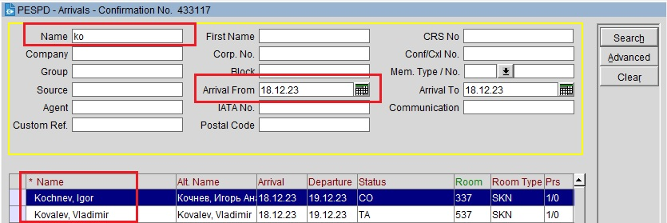

Когда гость подошел:
Необходимо улыбнуться и поздороваться:
— Добрый день! У вас бронирование? Потребуются ваши документы.
Далее, открываем вкладку Arrivals и ищем бронирование гостя по фамилии: в графу Name вбиваем фамилию гостя латинскими буквами и нажимаем кнопку Search.

Если вы не можете найти бронирование, сначала стоит попробовать поменять имя и фамилию местами, попробовать поискать бронирование через Update Reservation за несколько суток до настоящего дня. Если это не помогло, спросите на какую фамилию бронировали номер, уточните способ бронирования (через наш сайт, яндекс и т.п., в этом случае можно спросить номер брони), категорию номера, даты проживания.
Важно: на заселении могут быть однофамильцы. Внимательно смотрим на имена.
В случае полного совпадения фамилии и имени, можно у гостя спросить номер брони или детали бронирования (категорию номера, дату выезда, метод бронирования и пр.)
Возможно, гость забронировал на себя несколько номеров для других людей, уточняем.
После того, как мы нашли бронирование и открыли его, задаем гостю вопрос:
— Вы ранее проживали у нас?
В случае утвердительного ответа, ищем данные гостя в КонтурУФМС.
Если гость у нас не проживал, делаем скан документа.
Либо сразу заполняем данные документа в контур вручную.
Далее проговариваем гостю детали бронирования:
- Количество ночей;
- Дата и время выезда;
- Если забронировано на несколько человек, то проговорить их количество и наличие дополнительного места (обращаем внимание на вкладку extra bed оплачено ли оно или нет, читаем Comments/Traces);
- Включено ли питание;
- Проговорить, если бронирование уже оплачено, если нет, то спросить, каким образом будет произведена оплата: по карте или наличными.
Также обязательно читаем для себя вкладки Comments и
Traces, часто там важная информация о бронировании. Если есть что-то, что необходимо знать гостю - проговариваем.
В случае, если гость оплачивает наличными, то выбираем - CA
В случае, если вы случайно выбрали CA или преавторизация средств не нужна, открываем Billing, находим комнату гостя, и там выбираем Payment, в методе оплаты выбираем CP и принимаем оплату. В таком случае происходит сразу расчет денежных средств.
О методах оплаты авторизация/расчет позже.
После того как вы приняли оплату (или увидели, что у гостя все оплачено), необходимо проговорить краткую информацию о гостинице.
—Номер располагается на ** этаже. Лифты позади вас, справа. Чтобы подняться на лифте необходимо воспользоваться ключом. В лифте есть разъем, в который вы вставляете и вынимаете ключ, после зеленого сигнала можно нажать номер этажа. Спуститься можно без ключа. Завтрак у вас включен, проходят завтраки в ресторане, по коридору слева от ресепшена, за стеклянной дверью. Завтраки проходят с 7 до 11 утра в формате Шведский стол. На завтрак с собой также необходимо иметь ключ от номера. Сам ресторан, и кофейня позади вас, работают до 1 ночи, кухня принимает заказы до 12. Если во время проживания появятся какие либо вопросы/пожелания, в номере на телефоне кнопка 0 - это ресепшн. Можете связаться с нами в любое время, мы работаем круглосуточно.
Если гость готов слушать дальше, то добавьте информацию про сауну, тренажерный зал, Wi-Fi, круглосуточный Room Service.
Параллельно с этой речью печатаем регистрационную карту, прокатываем ключ от номера, подготавливаем key-wallet.
Далее просим гостя расписаться в регистрационной карте и после этого отдаем ключ от номера, еще раз напомнив номер этажа и номер комнаты.
Гость расписывается в согласии обработки персональных данных, ответственность за счет, и если делается преавторизация, то согласие на это.
В целях обеспечения безопасности и конфиденциальности: если помимо гостя, которого вы заселяете, рядом стоят другие гости, то лучше не произносить вслух номер комнаты, если гость сам не спросит. Можно сказать номер этажа и показать номер комнаты на key-wallet. Также при оплате не озвучивать вслух стоимость проживания, ее можно ввести на калькуляторе и показать гостю.
При заселении у гостя сразу могут быть пожелания, рекомендую сразу записать, что именно гость хочет и передать по смене/записать в Comments.
К примеру, если гость выезжает раньше времени открытия завтраков, то записать в lunch boxes form время выезда, фамилию гостя, количество гостей и свои инициалы.
И/или в случае необходимости записать в handover к какому времени и когда подготовить отчетные документы.
Не стоит записывать пожелания гостя на кусках бумаги и т.п. Стоит своевременно отреагировать на пожелания, сразу позвонить в HSK или сразу сделать запись в handover.
Если номер заселили случайно или возникла необходимость вернуть его из In House в Arrivals, заходим в заселенное бронирование → Options → Cancel → No Reason Given.